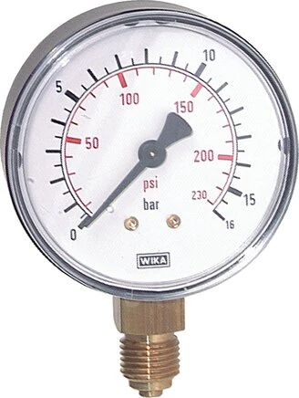

Hai thông số tưởng nhỏ nhưng quyết định việc đồng hồ áp suất có lắp được và đọc được hay không là đường kính mặt (Ø) và ren kết nối. Chọn sai Ø khiến khó bố trí hoặc khó đọc; chọn sai ren thì đơn giản là không lắp vào được. Bài viết giúp bạn chọn đúng Ø 40/50/63/80/100/160 mm, kiểu chân dưới/sau và ren G¼, G½, NPT. Fast Group Engineering là đại lý cung cấp hàng chính hãng WIKA (Germany) tại Việt Nam.

Gợi ý chọn nhanh
- Cần đọc áp suất tại chỗ trên máy, bơm, đường ống.
- Cần chọn đường kính mặt, dải đo, ren và vật liệu.
- Cần thay thế đồng hồ WIKA theo nameplate cũ.
- Part number hoặc ảnh nameplate.
- Dải đo, đường kính mặt, kiểu chân và ren kết nối.
- Môi chất, rung động, nhiệt độ và yêu cầu CO/CQ.
- Danh mục đồng hồ áp suất WIKA.
- Bài chọn đường kính mặt và ren.
- Bài cấp chính xác EN 837/Class.
Tóm tắt nhanh
- Ø mặt ảnh hưởng độ dễ đọc và cấp chính xác: 63 mm (panel/tủ), 100/160 mm (dễ đọc, chính xác hơn).
- Kiểu chân: dưới (senkrecht) hoặc sau (waagerecht) tùy hướng lắp.
- Ren phổ biến: G⅛, G¼, G½ (chuẩn BSP) hoặc NPT.
- Sai ren = không lắp; sai Ø = khó bố trí hoặc khó đọc.

Chọn đường kính mặt (Ø)
| Ø (mm) | Ưu điểm | Dùng khi |
|---|---|---|
| 40 / 50 | Rất gọn | Không gian chật, chỉ thị đơn giản |
| 63 | Gọn, phổ biến | Panel, tủ, máy móc |
| 80 | Trung gian | Cân bằng đọc và không gian |
| 100 | Dễ đọc, class tốt | Công nghiệp phổ biến |
| 160 | Đọc xa, chính xác cao | Fine measurement, phòng điều khiển |
Ø càng lớn, thang chia càng rõ và thường cấp chính xác tốt hơn, đổi lại chiếm chỗ và giá cao hơn.
Khoảng cách đọc là yếu tố dễ bị bỏ qua: nếu người vận hành đọc đồng hồ từ vài mét (ví dụ trên giàn ống cao), Ø160 là cần thiết; còn với đồng hồ ngay tầm tay trên máy, Ø63 vừa gọn vừa đủ rõ.
Chọn kiểu chân
- Chân dưới (senkrecht / bottom): ren ở đáy, đồng hồ đứng — phổ biến nhất cho lắp trên đường ống.
- Chân sau (waagerecht / back): ren phía sau — dùng khi gắn xuyên panel/tủ để mặt số nằm phẳng trên bảng điều khiển.
Hãy xác định theo hướng lắp và vị trí đọc: đồng hồ gắn trên tủ điều khiển gần như luôn dùng chân sau, còn đồng hồ trên đường ống thường dùng chân dưới.
Chọn ren kết nối
| Ren | Chuẩn | Ghi chú |
|---|---|---|
| G⅛ | BSP song song | Đồng hồ nhỏ Ø40/50 |
| G¼ | BSP song song | Phổ biến nhất, Ø63 |
| G½ | BSP song song | Ø100/160, đường ống lớn |
| NPT¼ / NPT½ | NPT côn | Theo hệ Mỹ / dự án O&G |
Lưu ý quan trọng: ren G (BSP) và NPT không tương thích trực tiếp — G là ren song song, NPT là ren côn. Nếu lệch chuẩn, phải dùng đầu nối chuyển ren (reducer/adapter) để đảm bảo kín.
Bảng chọn nhanh (gợi ý)
| Ứng dụng | Ø | Chân | Ren |
|---|---|---|---|
| Panel/tủ điều khiển | 63 | Sau | G¼ |
| Đường ống công nghiệp | 100 | Dưới | G½ |
| Đọc xa / chính xác | 160 | Dưới | G½ |
| Máy nén / thủy lực nhỏ | 63 | Dưới | G¼ |
Đừng quên môi trường lắp đặt
Ngoài Ø, chân và ren, hãy cân nhắc điều kiện xung quanh khi chốt cấu hình. Môi trường rung động (gần bơm, máy nén) nên chọn bản đổ dầu glycerin; môi trường ngoài trời hoặc ăn mòn nên chọn vỏ inox; áp cao hoặc yêu cầu an toàn nhân sự nên chọn safety pattern. Việc gộp các yêu cầu này vào cùng một lần chọn giúp bạn không phải đổi thiết bị sau khi lắp.
Checklist đặt hàng
- [ ] Ø mặt: 63 / 100 / 160 mm.
- [ ] Kiểu chân: dưới / sau.
- [ ] Ren: G¼ / G½ / NPT.
- [ ] Dải đo phù hợp áp làm việc (≈2/3 thang).
- [ ] Loại: khô / glycerin / safety.
Vì sao Ø mặt lại liên hệ với cấp chính xác?
Nhiều người ngạc nhiên khi biết rằng đường kính mặt không chỉ là chuyện thẩm mỹ hay dễ đọc, mà còn liên quan trực tiếp đến cấp chính xác khả dụng. Mặt số lớn hơn cho phép thang chia dài hơn, khoảng cách giữa các vạch rộng hơn, nhờ đó mắt người đọc được giá trị mịn hơn và cơ cấu chuyển động bên trong cũng có không gian để chế tạo chính xác hơn. Đó là lý do các cấp chính xác cao (class 1.0, 0.6 hay fine measurement) thường chỉ có ở Ø100 và Ø160, trong khi Ø40–63 phổ biến ở class 1.6–2.5. Khi yêu cầu độ chính xác cao, đừng chọn mặt quá nhỏ dù không gian có hạn — thay vào đó, cân nhắc bố trí lại vị trí lắp để dùng được mặt lớn hơn.
Cách kiểm tra ren khi không chắc chuẩn
Nhầm giữa ren G (BSP) và NPT là lỗi phổ biến vì nhìn bằng mắt thường khá giống nhau. Điểm khác biệt cốt lõi: ren G là ren song song (đường kính đều dọc thân), còn NPT là ren côn (thuôn dần). Khi không chắc, bạn có thể đặt một thước thẳng dọc theo đỉnh ren: nếu các đỉnh nằm trên một đường thẳng song song thì là G, nếu thuôn vào thì là NPT. Ngoài ra, số bước ren trên mỗi inch cũng khác nhau giữa hai chuẩn. Nếu vẫn phân vân, hãy đo đường kính ngoài và bước ren rồi gửi cho chúng tôi — xác định đúng chuẩn ren ngay từ đầu sẽ tránh được tình huống hàng về nhưng không vặn kín được vào process.
Kinh nghiệm chọn nhanh theo vị trí lắp
Một cách ra quyết định nhanh: bắt đầu từ vị trí lắp và khoảng cách đọc. Nếu đồng hồ gắn trên tủ điều khiển và người vận hành đứng ngay trước nó, hãy chọn Ø63 chân sau. Nếu gắn trên đường ống công nghiệp đọc ở tầm tay, Ø100 chân dưới là chuẩn mực. Nếu phải đọc từ xa trên giàn ống cao hoặc trong phòng điều khiển, chọn Ø160. Sau khi đã có Ø và kiểu chân, việc chọn ren chỉ còn là khớp với kết nối process sẵn có. Cách tiếp cận "từ vị trí lắp ngược về cấu hình" này giúp bạn tránh chọn sai và giảm số lần phải trao đổi lại khi hỏi giá.
Câu hỏi thường gặp
Ø100 hay Ø160 tốt hơn?
Ø160 đọc xa và thường chính xác hơn; Ø100 cân bằng chi phí và không gian.
Ren G¼ có lắp vào lỗ NPT¼ không?
Không nên — cần adapter chuyển đổi để đảm bảo kín, vì hai chuẩn ren khác nhau.
Làm sao biết đang dùng chân dưới hay sau?
Nhìn vị trí ren: ở dưới đáy (bottom) là chân dưới, ở phía sau lưng là chân sau.
Cần tư vấn chọn size hoặc báo giá?
Gửi Ø, kiểu chân, ren, dải đo và số lượng để nhận báo giá trong 24h.
- Email: minhduc@fastgroup.vn · Zalo: (+84) 938 888 958
Fast Group Engineering – đại lý cung cấp hàng chính hãng WIKA (Germany) tại Việt Nam.
Bài liên quan: [Đồng hồ áp suất WIKA là gì] · [Cấp chính xác đồng hồ áp suất] · [Đầu nối chuyển ren] · [Cách đọc part number WIKA]